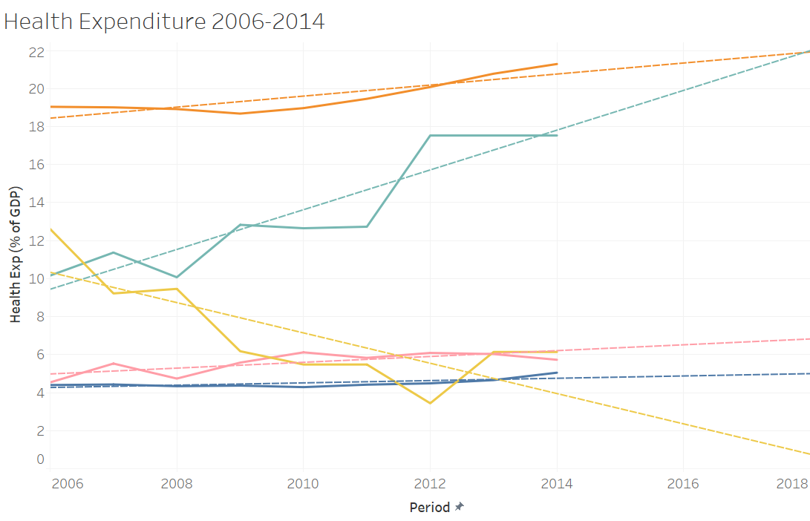
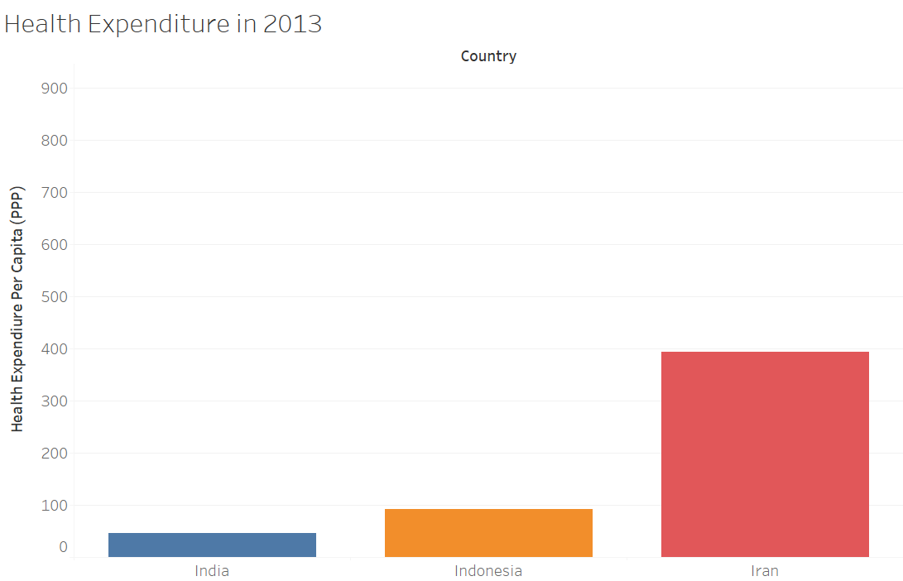

The Impacts of Health Expenditure
First Draft
Abstract
This article analyzes health economics, primarily focusing on healthcare expenditure and its impact. This was analyzed through a global perspective. Some of the aspects of health economics included are: global analysis of health expenditures, current global status on emphasis on health, costs of medicine, and hospital access.
Our motivation for this project is to inform the general population for future decision making processes regarding health. If they can see the impact of healthcare expenditure, the general population will be able to make informed decisions that may improve the situation overall.
Medical Expenditure in a Global Perspective
As the health of their citizens is a priority for many countries, it’s natural that it would be part of each country’s total government expenditure. Prior to creating these visualizations we thought that countries that are commonly known to have universal healthcare such as Canada and much of the European Union would have much higher spending on healthcare than countries such as the United States.
Creating this visualization caught us by surprise, as the United States’s spending on healthcare was on par with nations with universal healthcare in 2014.

(Things we know we need to change: add a title, make this an actually interactive Tableau visualization)
Let’s also look at some trends in healthcare expenditure between the years 1994 and 2004.
Here are the trends in spending by location:
(Things we know we need to change: add a title, not make the year have commas, define some of the regions)
Here is the healthcare expenditure by income groups (classified by the World Bank)
Health Expenditure by Percentage

% of GDP due to healthcare expenditure is shown in this image. The darker the blue, the more percent of GDP due to healthcare. The scale is shown in the image as well. Used World Indicators Data.
Impact of Health Expenditure on Cost of Medicine
Across the globe, the price of medicine varies. For developing and transitional countries, medicine takes up 20% to 60% of health spending . To determine whether there is a relationship between the price of medicine in these countries and the corresponding county’s health expenditure. From the scatterplot, there is an indication that there is a potential trend that the higher the health expenditure then the lower the median price ratio with a p-value of 0.01 for developing and transitional countries. Future studies would like to include all countries or developed countries for a comparative analysis.
An interesting data point is India, Indonesia, and Iran. India has the lowest health expenditure. Meanwhile Indonesia has the second most lowest health expenditure and a low median price ratio of 1.8. The highest expenditure has the lowest median price ratio of 1.3. Perhaps looking at the amount spent will build to why or is it something of their history/economy style that can explain why.
 Iran’s health expenditure over the past year has been increasing near the US health expenditure. Perhaps it’s the magnitude of health expenditure that helps keep the costs of medicine affordable. Though this cannot be said with the other two countries of interest. What is still strange is although both India and Indonesia have similar health expenditure rates, their median prices ratios on medicine are completely different. Let’s evaluate using the health expenditure per capita in US dollars.
Note for future figure edit: show rates by annotation, could also be bar chart
Note for future edit: Highlight by color or hover with their median? Do a bar chart and user scroll with the year? Or animated with year, average 2007-2013?
Though India and Indonesia have the same growth rate and percentage, Indonesia has twice as much money spent per person. Both are much lower than Iran spending. It still doesn’t account for the large difference between India and Indonesia median price ratio. This may be most due to policy reasons.
Impacts of Health Expenditure on Hospital Access
The first visualization provides an overview of the number of hospital locations across different U.S states. The static image displays the U.S map and uses size as a visual encoding variable to demonstrate the number of hospital locations in each state. Markings of the magnitude of hospital locations are also provided for easy access.
This visualization also uses the location (latitude and longitude) of each U.S state and uses color as a visual encoding variable to represent the net cost of living index in each state. The increasing hue on the color scale indicates a net higher cost of living index for that case
For this visualization, the question we are trying to answer is whether there is a correlation between the cost of living index and number of hospital locations for each state. In order to plot this, I used a simple scatter plot with markings for the names of each state and used a trendline to demonstrate the correlation between the 2 variables. From this plot, it does not look like there is a significant correlation between the cost of living index and the access to healthcare facilities in these states.
Acknowledgements
This template was adapted from the initial Scrollytelling template for Idyll.